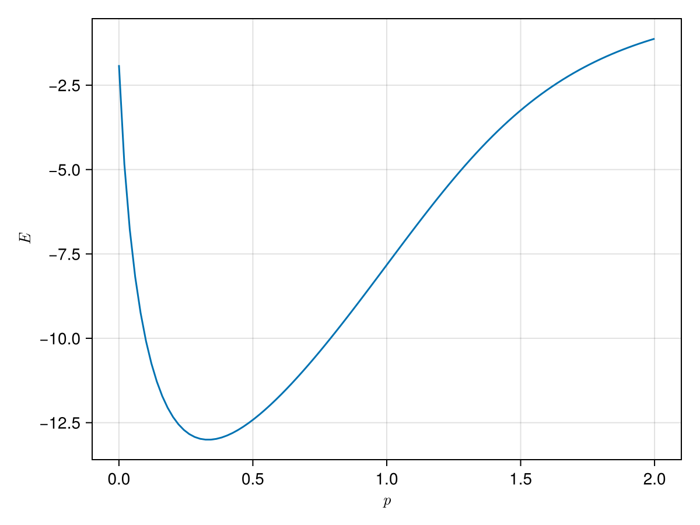
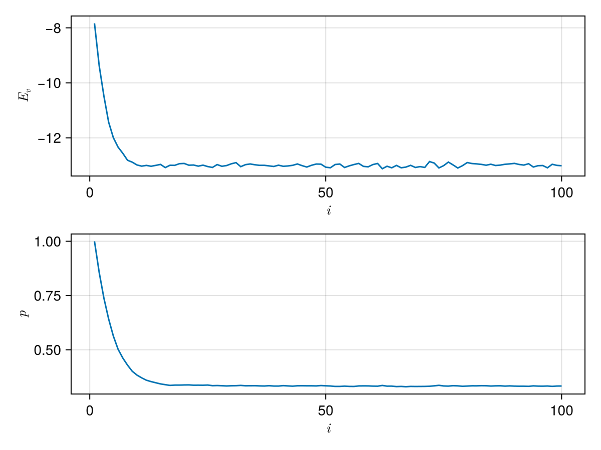
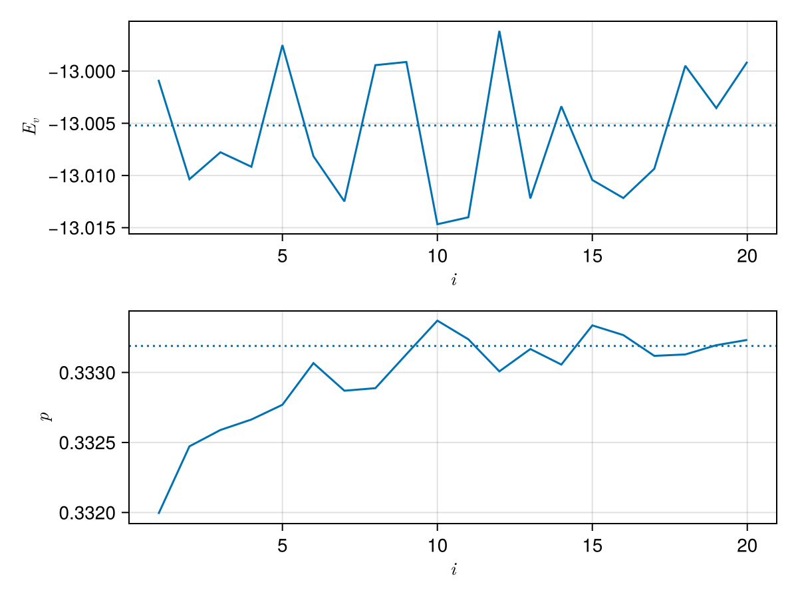

Gutzwiller


importance sampling and variational Monte Carlo for Rimu.jl
Installation
Gutzwiller.jl is not yet registered. To install it, run
import Pkg; Pkg.add("https://github.com/mtsch/Gutzwiller.jl")Usage guide
using Rimuusing Gutzwillerusing CairoMakieusing LaTeXStringsFirst, we set up a starting address and a Hamiltonian
addr = near_uniform(BoseFS{10,10})H = HubbardReal1D(addr; u=2.0)HubbardReal1D(fs"|1 1 1 1 1 1 1 1 1 1⟩"; u=2.0, t=1.0)In this example, we'll set up a Gutzwiller ansatz to importance-sample the Hamiltonian.
ansatz = GutzwillerAnsatz(H)GutzwillerAnsatz{Rimu.BitStringAddresses.BoseFS{10, 10, Rimu.BitStringAddresses.BitString{19, 1, UInt32}}, Float64, Rimu.Hamiltonians.HubbardReal1D{Float64, Rimu.BitStringAddresses.BoseFS{10, 10, Rimu.BitStringAddresses.BitString{19, 1, UInt32}}, 2.0, 1.0}}(HubbardReal1D(fs"|1 1 1 1 1 1 1 1 1 1⟩"; u=2.0, t=1.0))An ansatz is a struct that given a set of parameters and an address, produces the value it would have if it was a vector.
ansatz(addr, [1.0])1.0In addition, the function val_and_grad can be used to compute both the value and its gradient with respect to the parameters.
val_and_grad(ansatz, addr, [1.0])(1.0, [-0.0])Deterministic optimization
For effective importance sampling, we want the ansatz to be as good of an approximation to the ground state of the Hamiltonian as possible. As the value of the Rayleigh quotient of a given ansatz is always larger than the Hamiltonian's ground state energy, we can use an optimization algorithm to find the paramters that minimize its energy.
When the basis of the Hamiltonian is small enough to fit into memory, it's best to use the LocalEnergyEvaluator
le = LocalEnergyEvaluator(H, ansatz)LocalEnergyEvaluator(HubbardReal1D(fs"|1 1 1 1 1 1 1 1 1 1⟩"; u=2.0, t=1.0), GutzwillerAnsatz{Rimu.BitStringAddresses.BoseFS{10, 10, Rimu.BitStringAddresses.BitString{19, 1, UInt32}}, Float64, Rimu.Hamiltonians.HubbardReal1D{Float64, Rimu.BitStringAddresses.BoseFS{10, 10, Rimu.BitStringAddresses.BitString{19, 1, UInt32}}, 2.0, 1.0}}(HubbardReal1D(fs"|1 1 1 1 1 1 1 1 1 1⟩"; u=2.0, t=1.0)))which can be used to evaulate the value of the Rayleigh quotient (or its gradient) for given parameters. In the case of the Gutzwiller ansatz, there is only one parameter.
le([1.0])-7.825819465047338Like before, we can use val_and_grad to also evaluate its gradient.
val_and_grad(le, [1.0])(-7.825819465047338, [10.61414777614323])Now, let's plot the energy landscape for this particular case
begin fig = Figure() ax = Axis(fig[1, 1]; xlabel=L"p", ylabel=L"E") ps = range(0, 2; length=100) Es = [le([p]) for p in ps] lines!(ax, ps, Es) figend
To find the minimum, pass le to optimize from Optim.jl
using Optim, NLSolversBaseopt_nelder = optimize(le, [1.0]) * Status: success
* Candidate solution
Final objective value: -1.300521e+01
* Found with
Algorithm: Nelder-Mead
* Convergence measures
√(Σ(yᵢ-ȳ)²)/n ≤ 1.0e-08
* Work counters
Seconds run: 1 (vs limit Inf)
Iterations: 11
f(x) calls: 25
To take advantage of the gradients, wrap the evaluator in only_fg!. This will usually reduce the number of steps needed to reach the minimum.
opt_lbgfs = optimize(only_fg!(le), [1.0]) * Status: success
* Candidate solution
Final objective value: -1.300521e+01
* Found with
Algorithm: L-BFGS
* Convergence measures
|x - x'| = 1.01e-08 ≰ 0.0e+00
|x - x'|/|x'| = 3.04e-08 ≰ 0.0e+00
|f(x) - f(x')| = 1.46e-11 ≰ 0.0e+00
|f(x) - f(x')|/|f(x')| = 1.12e-12 ≰ 0.0e+00
|g(x)| = 1.96e-10 ≤ 1.0e-08
* Work counters
Seconds run: 1 (vs limit Inf)
Iterations: 8
f(x) calls: 14
∇f(x) calls: 14
∇f(x)ᵀv calls: 0
We can inspect the parameters and the value at the minimum as
opt_lbgfs.minimizer, opt_lbgfs.minimum([0.3331889106034745], -13.005208186389002)Variational quantum Monte Carlo
When the Hamiltonian is too large to store its full basis in memory, we can use variational QMC to sample addresses from the Hilbert space and evaluate their energy at the same time. An important paramter we have tune is the number steps. More steps will give us a better approximation of the energy, but take longer to evaluate. Not taking enough samples can also result in producing a biased result. Consider the following.
p0 = [1.0]@time kinetic_vqmc(H, ansatz, p0; steps=1e2)KineticVQMCResult
walkers: 1
samples: 100
local energy: -7.9379 ± 0.46605@time kinetic_vqmc(H, ansatz, p0; steps=1e5)KineticVQMCResult
walkers: 1
samples: 100000
local energy: -7.8325 ± 0.016705@time kinetic_vqmc(H, ansatz, p0; steps=1e7)KineticVQMCResult
walkers: 1
samples: 10000000
local energy: -7.8269 ± 0.0017078For this simple example, 1e2 steps gives an energy that is significantly higher, while 1e7 takes too long. 1e5 seems to work well enough. For more convenient evaluation, we wrap VQMC into a struct that behaves much like the LocalEnergyEvaluator.
qmc = KineticVQMC(H, ansatz; samples=1e4)KineticVQMC(
HubbardReal1D(fs"|1 1 1 1 1 1 1 1 1 1⟩"; u=2.0, t=1.0),
GutzwillerAnsatz{Rimu.BitStringAddresses.BoseFS{10, 10, Rimu.BitStringAddresses.BitString{19, 1, UInt32}}, Float64, Rimu.Hamiltonians.HubbardReal1D{Float64, Rimu.BitStringAddresses.BoseFS{10, 10, Rimu.BitStringAddresses.BitString{19, 1, UInt32}}, 2.0, 1.0}}(HubbardReal1D(fs"|1 1 1 1 1 1 1 1 1 1⟩"; u=2.0, t=1.0));
steps=10000,
walkers=1,
equilibration=1000,
)qmc([1.0]), le([1.0])(-7.76763736727408, -7.825819465047338)Because the output of this procedure is noisy, optimizing it with Optim.jl will not work. Instead, we use stochastic reconfiguration, which estimates the gradient together with the metric tensor of the ansatz from the same samples, and uses the metric to choose well-scaled steps.
sr_result = stochastic_reconfiguration(qmc, [1.0])StochasticReconfigurationResult
iterations: 100
converged: false (iterations)
last value: -13.015573538708336 ± 0.055715368071643456
last params: [0.3330535289354615]While stochastic_reconfiguration attempts to determine if the optimization converged, it will generally not detect convergence due to the noise in the QMC evaluation. The best way to determine convergence is to plot the results. sr_result can be converted to a DataFrame.
sr_df = DataFrame(sr_result)100×11 DataFrame
Row │ τ shift diag_shift max_step iter param value error gradient param_delta step_length
│ Float64 Float64 Float64 Float64 Int64 SArray… Float64 Float64 SArray… SArray… Float64
─────┼─────────────────────────────────────────────────────────────────────────────────────────────────────────────────────────────
1 │ 0.05 0.001 0.001 0.2 1 [1.0] -7.8339 0.0460536 [10.6189] [-0.143791] 0.195227
2 │ 0.05 0.001 0.001 0.2 2 [0.856209] -9.37962 0.0469525 [9.92575] [-0.118628] 0.171445
3 │ 0.05 0.001 0.001 0.2 3 [0.737581] -10.4849 0.0480572 [9.58464] [-0.0956644] 0.151297
4 │ 0.05 0.001 0.001 0.2 4 [0.641916] -11.4308 0.0447942 [8.82709] [-0.0787522] 0.131739
5 │ 0.05 0.001 0.001 0.2 5 [0.563164] -11.9958 0.0527298 [7.26709] [-0.0606156] 0.10487
6 │ 0.05 0.001 0.001 0.2 6 [0.502549] -12.3386 0.0497011 [5.73744] [-0.0404337] 0.0761067
7 │ 0.05 0.001 0.001 0.2 7 [0.462115] -12.562 0.0480453 [4.77926] [-0.0327362] 0.0625012
8 │ 0.05 0.001 0.001 0.2 8 [0.429379] -12.8152 0.0431722 [4.67579] [-0.0282174] 0.0573967
9 │ 0.05 0.001 0.001 0.2 9 [0.401161] -12.8853 0.0447036 [3.09581] [-0.0177272] 0.0370178
10 │ 0.05 0.001 0.001 0.2 10 [0.383434] -12.9864 0.0541551 [2.48003] [-0.0126899] 0.0280327
11 │ 0.05 0.001 0.001 0.2 11 [0.370744] -13.0299 0.0486286 [2.07003] [-0.0109775] 0.0238203
12 │ 0.05 0.001 0.001 0.2 12 [0.359767] -13.0032 0.0458834 [1.27697] [-0.00636418] 0.0142453
13 │ 0.05 0.001 0.001 0.2 13 [0.353403] -13.0342 0.0500887 [1.06594] [-0.00537458] 0.0119605
14 │ 0.05 0.001 0.001 0.2 14 [0.348028] -13.0018 0.0543554 [1.10765] [-0.00528173] 0.0120865
15 │ 0.05 0.001 0.001 0.2 15 [0.342746] -12.9673 0.0502254 [0.692802] [-0.00351012] 0.00779245
16 │ 0.05 0.001 0.001 0.2 16 [0.339236] -13.0828 0.0472044 [0.690001] [-0.00328709] 0.00752563
17 │ 0.05 0.001 0.001 0.2 17 [0.335949] -12.9977 0.0684307 [-0.283039] [0.00131846] 0.00305259
18 │ 0.05 0.001 0.001 0.2 18 [0.337267] -13.0009 0.0502186 [-0.00621839] [2.9752e-5] 6.79686e-5
19 │ 0.05 0.001 0.001 0.2 19 [0.337297] -12.9413 0.05661 [-0.119331] [0.000572267] 0.00130583
20 │ 0.05 0.001 0.001 0.2 20 [0.337869] -12.932 0.0518726 [-0.066424] [0.000318689] 0.000727039
21 │ 0.05 0.001 0.001 0.2 21 [0.338188] -12.9953 0.0576801 [0.273425] [-0.00134877] 0.00303458
22 │ 0.05 0.001 0.001 0.2 22 [0.336839] -12.9895 0.0532173 [-0.0358098] [0.000169804] 0.00038966
23 │ 0.05 0.001 0.001 0.2 23 [0.337009] -13.0301 0.0486718 [0.0592574] [-0.000286151] 0.000650699
24 │ 0.05 0.001 0.001 0.2 24 [0.336723] -12.9941 0.0559598 [-0.182108] [0.000847157] 0.00196272
25 │ 0.05 0.001 0.001 0.2 25 [0.33757] -13.0449 0.0506447 [0.614462] [-0.00294251] 0.0067192
26 │ 0.05 0.001 0.001 0.2 26 [0.334628] -13.0778 0.0567717 [-0.156417] [0.000676673] 0.00162572
27 │ 0.05 0.001 0.001 0.2 27 [0.335304] -12.9728 0.0442395 [0.19577] [-0.000969028] 0.00217646
28 │ 0.05 0.001 0.001 0.2 28 [0.334335] -13.0351 0.0441636 [0.209774] [-0.00105301] 0.00234856
29 │ 0.05 0.001 0.001 0.2 29 [0.333282] -13.0085 0.0538139 [-0.186381] [0.000890582] 0.00203586
30 │ 0.05 0.001 0.001 0.2 30 [0.334173] -12.9448 0.0470304 [-0.0853435] [0.000403533] 0.000927335
31 │ 0.05 0.001 0.001 0.2 31 [0.334576] -12.9019 0.0597719 [-0.288808] [0.00126056] 0.0030151
32 │ 0.05 0.001 0.001 0.2 32 [0.335837] -13.0493 0.0461174 [0.358736] [-0.00170273] 0.00390546
33 │ 0.05 0.001 0.001 0.2 33 [0.334134] -12.976 0.0544582 [-0.0248308] [0.000120908] 0.0002738
34 │ 0.05 0.001 0.001 0.2 34 [0.334255] -12.9506 0.0463551 [-0.0542442] [0.000244863] 0.000575907
35 │ 0.05 0.001 0.001 0.2 35 [0.3345] -12.9802 0.0460163 [0.200081] [-0.000959026] 0.00218892
36 │ 0.05 0.001 0.001 0.2 36 [0.333541] -13.0004 0.0435181 [0.101149] [-0.000473564] 0.00109366
37 │ 0.05 0.001 0.001 0.2 37 [0.333067] -12.9998 0.0535175 [-0.290809] [0.00138292] 0.00316894
38 │ 0.05 0.001 0.001 0.2 38 [0.33445] -13.0212 0.0458126 [0.306234] [-0.00151034] 0.0033984
39 │ 0.05 0.001 0.001 0.2 39 [0.33294] -13.0419 0.0541174 [0.0163054] [-7.68631e-5] 0.000176903
40 │ 0.05 0.001 0.001 0.2 40 [0.332863] -12.9952 0.0560523 [-0.425145] [0.00195759] 0.00455871
41 │ 0.05 0.001 0.001 0.2 41 [0.334821] -13.035 0.0509581 [0.284841] [-0.00134891] 0.00309745
42 │ 0.05 0.001 0.001 0.2 42 [0.333472] -13.0233 0.0440129 [0.219795] [-0.00106698] 0.00241991
43 │ 0.05 0.001 0.001 0.2 43 [0.332405] -13.0001 0.0646159 [-0.34905] [0.00165218] 0.00379476
44 │ 0.05 0.001 0.001 0.2 44 [0.334057] -12.9505 0.0491378 [-0.0500028] [0.000234887] 0.00054155
45 │ 0.05 0.001 0.001 0.2 45 [0.334292] -13.0121 0.0494494 [0.0659243] [-0.000325267] 0.000731734
46 │ 0.05 0.001 0.001 0.2 46 [0.333967] -13.0625 0.0540723 [0.00307092] [-1.4841e-5] 3.37347e-5
47 │ 0.05 0.001 0.001 0.2 47 [0.333952] -12.9986 0.0475077 [0.099217] [-0.000459606] 0.00106708
48 │ 0.05 0.001 0.001 0.2 48 [0.333492] -12.9535 0.05631 [-0.353662] [0.00171233] 0.00388865
49 │ 0.05 0.001 0.001 0.2 49 [0.335205] -12.9574 0.0581451 [0.258897] [-0.00119769] 0.00278258
50 │ 0.05 0.001 0.001 0.2 50 [0.334007] -13.0682 0.0515347 [0.187039] [-0.000889297] 0.00203799
51 │ 0.05 0.001 0.001 0.2 51 [0.333118] -13.0885 0.0452541 [0.422174] [-0.00198119] 0.00457005
52 │ 0.05 0.001 0.001 0.2 52 [0.331136] -12.971 0.0515419 [-0.0105062] [4.72158e-5] 0.000111296
53 │ 0.05 0.001 0.001 0.2 53 [0.331184] -12.9528 0.0587718 [-0.289677] [0.00134801] 0.0031226
54 │ 0.05 0.001 0.001 0.2 54 [0.332532] -13.0794 0.0521001 [0.273201] [-0.00127436] 0.00294849
55 │ 0.05 0.001 0.001 0.2 55 [0.331257] -13.0191 0.044586 [0.0471724] [-0.000220603] 0.000509755
56 │ 0.05 0.001 0.001 0.2 56 [0.331037] -12.971 0.049729 [-0.55215] [0.00235357] 0.0056965
57 │ 0.05 0.001 0.001 0.2 57 [0.33339] -12.9305 0.0595761 [-0.0642579] [0.000285969] 0.000677387
58 │ 0.05 0.001 0.001 0.2 58 [0.333676] -13.0385 0.0540033 [0.0351164] [-0.00015117] 0.000364086
59 │ 0.05 0.001 0.001 0.2 59 [0.333525] -13.0551 0.046888 [0.189252] [-0.000906099] 0.00206928
60 │ 0.05 0.001 0.001 0.2 60 [0.332619] -12.9726 0.0494667 [0.0658164] [-0.000316104] 0.000720764
61 │ 0.05 0.001 0.001 0.2 61 [0.332303] -12.933 0.0584474 [-0.75882] [0.00332587] 0.00793847
62 │ 0.05 0.001 0.001 0.2 62 [0.335629] -13.1241 0.043189 [0.660695] [-0.00313761] 0.00719468
63 │ 0.05 0.001 0.001 0.2 63 [0.332491] -13.0334 0.05795 [-0.0130786] [5.89853e-5] 0.000138792
64 │ 0.05 0.001 0.001 0.2 64 [0.33255] -13.0906 0.0456359 [0.452977] [-0.00212295] 0.00490027
65 │ 0.05 0.001 0.001 0.2 65 [0.330427] -13.0039 0.0683237 [-0.176623] [0.000758374] 0.00182886
66 │ 0.05 0.001 0.001 0.2 66 [0.331185] -13.0902 0.044089 [0.29631] [-0.0014206] 0.00324205
67 │ 0.05 0.001 0.001 0.2 67 [0.329765] -13.0643 0.0531791 [-0.30843] [0.00146461] 0.00335854
68 │ 0.05 0.001 0.001 0.2 68 [0.33123] -13.0002 0.0542972 [0.0809491] [-0.000365284] 0.00085928
69 │ 0.05 0.001 0.001 0.2 69 [0.330864] -13.0778 0.0484416 [-0.0356521] [0.000176974] 0.000396923
70 │ 0.05 0.001 0.001 0.2 70 [0.331041] -13.0473 0.0519427 [-0.0516924] [0.000237836] 0.00055407
71 │ 0.05 0.001 0.001 0.2 71 [0.331279] -13.0763 0.0491648 [-0.15447] [0.000760448] 0.00171265
72 │ 0.05 0.001 0.001 0.2 72 [0.332039] -12.8634 0.0634274 [-0.378747] [0.00179329] 0.00411824
73 │ 0.05 0.001 0.001 0.2 73 [0.333833] -12.9183 0.0612348 [-0.533921] [0.00241085] 0.0056694
74 │ 0.05 0.001 0.001 0.2 74 [0.336244] -13.0954 0.0485018 [0.600273] [-0.00296009] 0.00666096
75 │ 0.05 0.001 0.001 0.2 75 [0.333284] -13.0115 0.0506786 [0.130922] [-0.000617328] 0.00142061
76 │ 0.05 0.001 0.001 0.2 76 [0.332666] -12.8828 0.0573016 [-0.43999] [0.0019064] 0.00457661
77 │ 0.05 0.001 0.001 0.2 77 [0.334573] -12.986 0.0455946 [0.183699] [-0.000860157] 0.00198634
78 │ 0.05 0.001 0.001 0.2 78 [0.333712] -13.0985 0.0430768 [0.373389] [-0.00176451] 0.00405607
79 │ 0.05 0.001 0.001 0.2 79 [0.331948] -13.0122 0.0522716 [-0.19772] [0.00092311] 0.00213483
80 │ 0.05 0.001 0.001 0.2 80 [0.332871] -12.8997 0.0561849 [-0.222866] [0.00103534] 0.00240035
81 │ 0.05 0.001 0.001 0.2 81 [0.333906] -12.9353 0.0567937 [0.0132129] [-6.42626e-5] 0.000145609
82 │ 0.05 0.001 0.001 0.2 82 [0.333842] -12.9482 0.0576186 [-0.162219] [0.000737278] 0.00172815
83 │ 0.05 0.001 0.001 0.2 83 [0.334579] -12.9664 0.0514665 [0.0704974] [-0.000325826] 0.000757342
84 │ 0.05 0.001 0.001 0.2 84 [0.334254] -12.9962 0.0472798 [0.308381] [-0.0013209] 0.00318929
85 │ 0.05 0.001 0.001 0.2 85 [0.332933] -12.9604 0.0513912 [-0.173213] [0.000822212] 0.00188579
86 │ 0.05 0.001 0.001 0.2 86 [0.333755] -13.0069 0.0522294 [-0.0638656] [0.00031353] 0.000707104
87 │ 0.05 0.001 0.001 0.2 87 [0.334068] -12.9922 0.0552661 [0.312574] [-0.00143203] 0.00334323
88 │ 0.05 0.001 0.001 0.2 88 [0.332636] -12.9621 0.0515336 [-0.186627] [0.000958206] 0.00211313
89 │ 0.05 0.001 0.001 0.2 89 [0.333595] -12.9484 0.0494796 [0.198377] [-0.000952143] 0.00217174
90 │ 0.05 0.001 0.001 0.2 90 [0.332642] -12.9299 0.0538183 [0.0967549] [-0.000448992] 0.00104152
91 │ 0.05 0.001 0.001 0.2 91 [0.332193] -12.969 0.0552771 [-0.0125853] [5.93701e-5] 0.000136593
92 │ 0.05 0.001 0.001 0.2 92 [0.332253] -12.9914 0.0530796 [0.140105] [-0.000634089] 0.00148941
93 │ 0.05 0.001 0.001 0.2 93 [0.331619] -12.942 0.0524262 [-0.455023] [0.00204909] 0.00482515
94 │ 0.05 0.001 0.001 0.2 94 [0.333668] -13.0621 0.0468631 [0.215878] [-0.00104483] 0.00237323
95 │ 0.05 0.001 0.001 0.2 95 [0.332623] -13.0141 0.0478723 [0.055589] [-0.000266484] 0.000608192
96 │ 0.05 0.001 0.001 0.2 96 [0.332357] -13.0078 0.0479895 [-0.150957] [0.000728242] 0.00165682
97 │ 0.05 0.001 0.001 0.2 97 [0.333085] -13.091 0.0562707 [0.33387] [-0.00159875] 0.00365082
98 │ 0.05 0.001 0.001 0.2 98 [0.331486] -12.9621 0.0568236 [-0.311927] [0.00145775] 0.00336961
99 │ 0.05 0.001 0.001 0.2 99 [0.332944] -13.0021 0.0512429 [-0.0225719] [0.000109782] 0.000248749
100 │ 0.05 0.001 0.001 0.2 100 [0.333054] -13.0156 0.0557154 [0.232728] [-0.00106375] 0.00248632To plot it, we can either work with the DataFrame or access the fields directly
begin fig = Figure() ax1 = Axis(fig[1, 1]; xlabel=L"i", ylabel=L"E_v") ax2 = Axis(fig[2, 1]; xlabel=L"i", ylabel=L"p") lines!(ax1, sr_df.iter, sr_df.value) lines!(ax2, first.(sr_result.param)) figend
We see from the plot that the value of the energy is fluctuating around what appears to be the minimum. While the parameter estimate here is probably good enough for importance sampling, we can refine the result by creating a new KineticVQMC structure with increased samples and use it to refine the result. Here, we can pass the previous result sr_result in place of the initial parameters, which will continue the computation where the previous one left off.
qmc2 = KineticVQMC(H, ansatz; samples=1e6)sr_result2 = stochastic_reconfiguration(qmc2, sr_result; maxiter=20)StochasticReconfigurationResult
iterations: 20
converged: false (iterations)
last value: -12.99910721803744 ± 0.005756877225237732
last params: [0.33323228457730847]Now, let's plot the refined result next to the minimum found by Optim.jl
begin fig = Figure() ax1 = Axis(fig[1, 1]; xlabel=L"i", ylabel=L"E_v") ax2 = Axis(fig[2, 1]; xlabel=L"i", ylabel=L"p") lines!(ax1, sr_result2.value) hlines!(ax1, [opt_lbgfs.minimum]; linestyle=:dot) lines!(ax2, first.(sr_result2.param)) hlines!(ax2, opt_lbgfs.minimizer; linestyle=:dot) figend
Importance sampling
Finally, we have a good estimate for the parameter to use with importance sampling. Gutzwiller.jl provides AnsatzSampling, which is similar to GutzwillerSampling from Rimu, but can be used with different ansatze.
p = final_params(sr_result2)G = AnsatzSampling(H, ansatz, p)AnsatzSampling{false, Float64, 1, GutzwillerAnsatz{Rimu.BitStringAddresses.BoseFS{10, 10, Rimu.BitStringAddresses.BitString{19, 1, UInt32}}, Float64, Rimu.Hamiltonians.HubbardReal1D{Float64, Rimu.BitStringAddresses.BoseFS{10, 10, Rimu.BitStringAddresses.BitString{19, 1, UInt32}}, 2.0, 1.0}}, Rimu.Hamiltonians.HubbardReal1D{Float64, Rimu.BitStringAddresses.BoseFS{10, 10, Rimu.BitStringAddresses.BitString{19, 1, UInt32}}, 2.0, 1.0}}(HubbardReal1D(fs"|1 1 1 1 1 1 1 1 1 1⟩"; u=2.0, t=1.0), GutzwillerAnsatz{Rimu.BitStringAddresses.BoseFS{10, 10, Rimu.BitStringAddresses.BitString{19, 1, UInt32}}, Float64, Rimu.Hamiltonians.HubbardReal1D{Float64, Rimu.BitStringAddresses.BoseFS{10, 10, Rimu.BitStringAddresses.BitString{19, 1, UInt32}}, 2.0, 1.0}}(HubbardReal1D(fs"|1 1 1 1 1 1 1 1 1 1⟩"; u=2.0, t=1.0)), [0.3332228539757279])This can now be used with FCIQMC. Let's compare the importance sampled time series to a non-importance sampled one.
prob_standard = ProjectorMonteCarloProblem(H; target_walkers=15, last_step=2000)sim_standard = solve(prob_standard)shift_estimator(sim_standard; skip=1000)BlockingResult{Float64}
mean = -10.8 ± 0.69
with uncertainty of ± 0.08929747564019451
from 31 blocks after 5 transformations (k = 6).
prob_sampled = ProjectorMonteCarloProblem(G; target_walkers=15, last_step=2000)sim_sampled = solve(prob_sampled)shift_estimator(sim_sampled; skip=1000)BlockingResult{Float64}
mean = -12.39 ± 0.44
with uncertainty of ± 0.040057037886880746
from 62 blocks after 4 transformations (k = 5).
Note that the lower energy estimate in the sampled case is probably due to a reduced population control bias. The effect importance sampling has on the statistic can be more dramatic for larger systems and beter choices of anstaze.
This page was generated using Literate.jl.